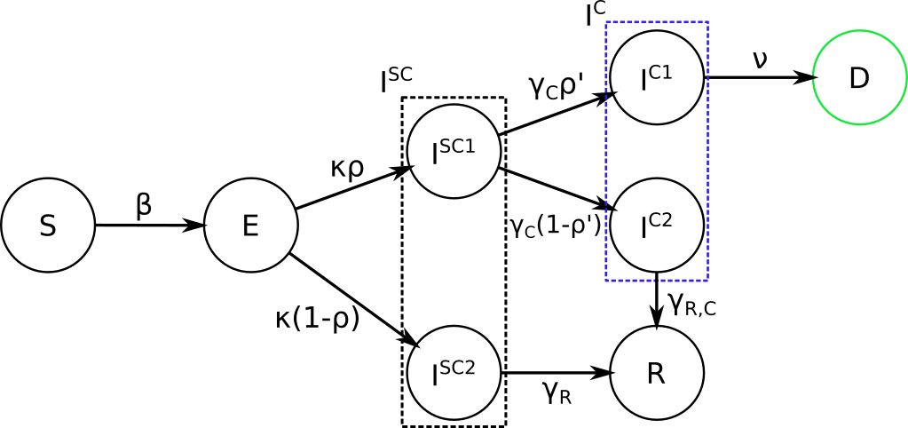

Epidemic Model¶
age-structured \(SEI^4RD\)¶
Presently, we are using a compartmental model, which splits the population of England into compartments representing different possible states (Susceptible (\(S\)), Exposed (\(E\)) but not infectious, Infected subclinical (\(I^{SC}\), split in \(I^{SC1}\) and \(I^{SC2}\)) not needing medical attention, Infected clinical needing medical attention (\(I^{C}\), split in \(I^{C1}\) and \(I^{C2}\)), Recovered (\(R\)) and Deceased (\(D\))). Further each of the states are structured along 5 age groups: \(0-19, 20-39, 40-59, 60-79, 80+\), hence \(E_i\) stands for the exposed population at the \(i\)-th age group, and similarly for the other states.
Description
Starting with the whole population being in the \(S\) state (except for some individuals, who are seeding the infection), any susceptible individual becomes exposed (\(E\)) with probability \(\beta\) for each contact with an infected one. Next our model assumes that, when a patient is hospitalized and diagnosed, it is isolated and therefore not able to spread the infection. To reflect this scenario, we assume that from the exposed state and after some incubation period, all patients will become sub-clinical \(I^{SC}\) in which they are infectious. Afterwards some of them will recover (go to \(R\)) and others will need clinical help (go to \(I^C\)), reflected in a split of two categories: the ones directly recovering (\(I^{SC2}\)) and the ones needing clinical help (\(I^{SC1}\)). The split happens with an age-dependent probability \(\rho_i\). People in \(I^{SC1}\) will go to hospital, therefore moving to the \(I^{C}\) state; similary as before, this state is split in two categories according to the final outcome: the ones in \(I^{C1}\) will decease (\(D\)) after some time, while the ones in \(I^{SC2}\) will recover (\(R\)). The split is again described by an age-dependent probability, which we denote as \(\rho'_i\). The dynamics can be visualized ad follows:
and is defined by the following ordinary differential equations (ODEs):
\(\frac{dS_i}{dt} = - \beta {S_i} \sum_j C_{i,j} \frac{I^{SC}_j}{N_j}, \ I_j^{SC} = I_j^{SC1} + I_j^{SC2}\)
\(\frac{dE_i}{dt} = \beta {S_i} \sum_j C_{i,j} \frac{I^{SC}_j}{N_j} - \kappa E_i\)
\(\frac{dI^{SC1}_i}{dt} = \rho_i \kappa E_i - \gamma_{C} I_i^{SC1}\)
\(\frac{dI^{SC2}_i}{dt} = (1-\rho_i) \kappa E_i - \gamma_{R} I_i^{SC2}\)
\(\frac{dI^{C1}_i}{dt} = \rho'_i \gamma_{C} I_i^{SC1} -\nu I_i^{C1}\)
\(\frac{dI^{C2}_i}{dt} = (1-\rho'_i) \gamma_{C} I_i^{SC1} -\gamma_{R,C} I_i^{C2}\)
\(\frac{dR_i}{dt} = \gamma_{R} I_i^{C2} + \gamma_R I_i^{SC2}\)
\(\frac{dD_i}{dt} = \nu I_i^{C1}\).
where \(C\) is the contact matrix representing the frequency of contacts between different age groups as in Prem et al. (2017). Further we will consider the contact matrix to be composed of four different contributions, corresponding to contacts happening respectively in home, workplace, school and other locations:
\(C=\alpha_{home}C_{home}+\alpha_{work}C_{work}+\alpha_{school}C_{school}+\alpha_{other}C_{other}\)
We reflect effects of lockdown strategies through the values of \(\alpha\) (\(\alpha_{school}=0\) means all schools are closed). Presently, we choose the values of different \(\alpha\) on different days based on Google mobility data , except for \(\alpha_{school}\), which we fix to 0.1 after the start of the lockdown (as in the UK children of essential workers can still access school).
Parameters
- The parameters of the considered model are following:
\(\beta\) probability of an \(S\)-\(I^{SC}\) contact to result in the S individual catching the infection
\(\kappa = 1/d_L\) transition rate of exposed individual becoming infectious, with \(d_L\) the average number of days in this latent state
\(\gamma_{C} = 1/d_C\) transition rate of going from from \(I^{SC1}\) to \(I^C\), with \(d_C\) the average number of days it takes to undergo this transition
\(\gamma_{R} = 1/d_R\) recovery rate from \(I^{SC2}\), with \(d_R\) the average number of days it takes to recover
\(\gamma_{R,C} = 1/d_{R,C}\) recovery rate from \(I^{C2}\), with \(d_{R,C}\) the average number of days it takes to recover
\(\nu = 1/d_D\) death rate from \(I^{C1}\), with \(d_D\) the average number of days before death occurs after being diagnosed (which mostly corresponds to reaching the hospital)
\(\rho_i\)’s: age dependent probabilities of going to \(I^C\) instead of directly recovering from the \(I^{SC}\) state; in order to reduce number of parameters, it is parametrized by a logistic transformation with parameters \(x_0\) and \(\phi\), as explained in the following.
\(\rho'_i\)’s: age dependent probabilities of death after becoming clinical; a logistic transformation with parameters \(x_0'\) and \(\phi'\) is used.
Moreover, initial conditions for the dynamics are needed; \(E_{in}\): the initial number of exposed people; we distribute this number of initially exposed people over the age groups in order to approximately reflect the age distribution of incoming flight passengers to the UK (check for instance here) as we are assuming the disease was brought to the UK from abroad; this results therefore in using the following rates in the age groups (from youngest to oldest): 0.1, 0.4, 0.35, 0.1, 0.05.
Other parameters are needed to connect the Google mobility data the reductions in social contacts \(\alpha\)’s.